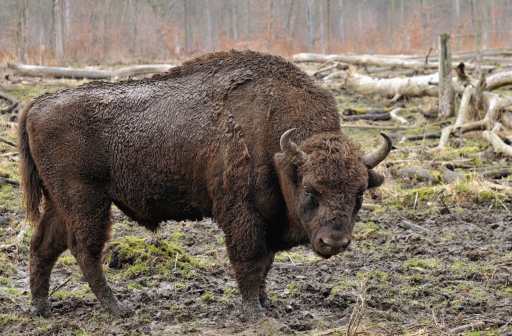
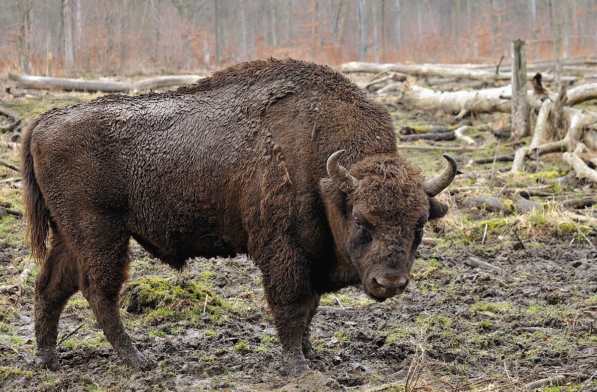

Witaj w firmie Przeganiacze Żubrów!
Specjalizujemy się w humanitarnym przeganianiu żubrów z terenów prywatnych i rolnych. Chronimy ludzi i żubry – w zgodzie z naturą.
Specjalizujemy się w humanitarnym przeganianiu żubrów z terenów prywatnych i rolnych. Chronimy ludzi i żubry – w zgodzie z naturą.
